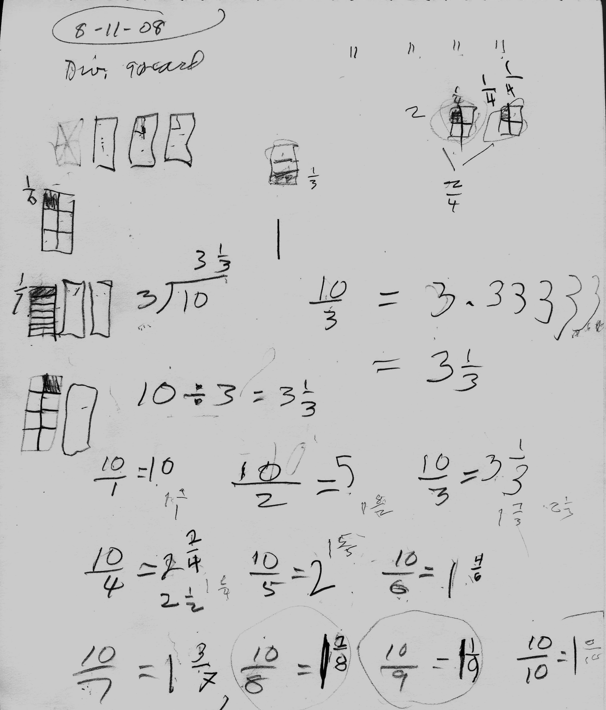
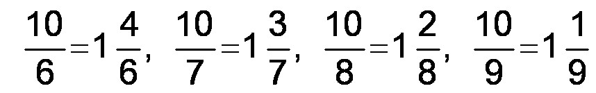
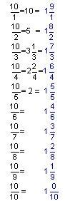
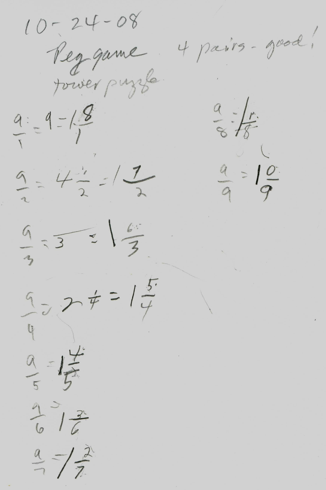
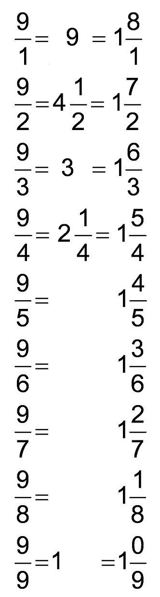
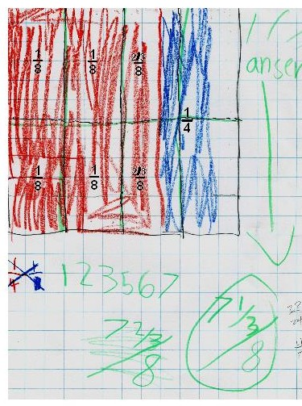
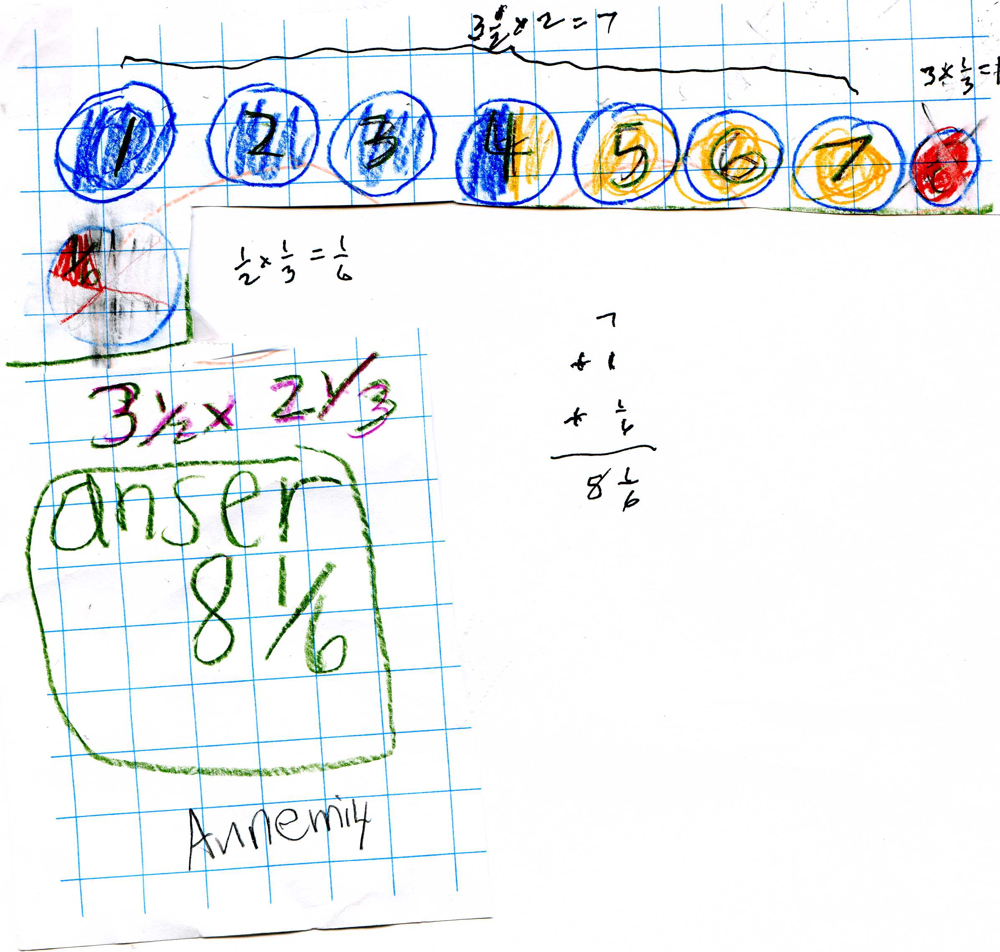

Sara and Maya find Patterns in division, and AnnEmily adds and multiplies fractions
Don had Sara do some division problems the week before her work below. One he gave her was 10 divided by 3, which Don, as usual, talked about sharing 10 cookies between 3 people, using 3x5" cards for cookies (see sample problems from chapter 2 his worksheet book at www.mathman.biz/html/prob2.html ). Sara said each person got 3 cookies with 1 left over. She cut the 1 leftover-cookie into 3 pieces, each 1/3 of the cookie- see the diagram below. So each person received 3+ 1/3 cookies. He also showed her other ways to write a division problem. And Sara had to figure out that when one cuts a cookie into 3 pieces, each piece is 1/3 of the cookie, a key idea! She tried the same problem on a calculator and got 3.3333... Instead of trying to show her how decimals work, Don had the idea of seeing what would happen if she did 10/1, 10/2, 10/3, 10/4, 10/5, 10/6, 10/7, 10/8, 10/9, and 10/10. Don wasn't sure what would happen, but he was almost sure there would be a PATTERN!

After finishing 10/7, her time had run out, but Sara insisted on finishing the last 3. When we got to 10/9 below, Don asked Sara if there was a Pattern in here:
Sara saw that going from right to left, the top numbers in the fractions got bigger by 1 and the bottom number got smaller by 1!! Now Don had never seen this before, in 54 years of teaching! Then when they got to 10/5 = 2 the pattern wasn't there; so they changed the remaining answers to 1 and something. The 10/5 = 2 = 1 5/5, then it fit in the pattern! After a lot of work in renaming numbers by Sara, even knowing what the answers would look like from the pattern, the final results ended up looking like this:

Maya's work dividing 9 by different numbers


This shows the power of PATTERNS in mathematics! It also shows Don's willingness to try new things, his fearlessness, and his being excited about the unknown and what will happen. Normally Don aims for students finding different ways to solve a problem; for example, if one shares 10 cookies between 3 people, a student might share 3 each, then cut the left-over cookie into 4 pieces, each getting 1/4, then cutting the left-over 1/4 into 3 pieces, each 1/12, so each person would get 3 + 1/4 + 1/12 (which is equivalent to 3+1/3 which Sara ended up with above). OR students, sharing when they can, then cut left-over pieces into 2 equal pieces every time, and end up with an infinite series 3 + 0/2 + 1/4 + 0/8 + 1/16 + 0/32 + ... which is also equal to 3 1/3!
Notice that Maya worked on The Peg Game and The Tower Puzzle (ch.6) before the division. Maya knew how to do these divisions by cookie-sharing also. Don left 9/6 = 1 3/6 without reducing the 3/6, in order to continue the pattern. Too much emphasis is placed on reducing fractions to lowest terms, because you also lose the patterns if you do that- which is more important.
Great work Sara and Maya !
AnnEmily, 2nd grader, adds fractions using complex fractions and multiplies mixed numbers-WOW!
Don gave AnnEmily the problem 2/3 + 1/4 = ? He walked away to work with other students. When he came back, he saw this picture (without 1/8 and so on in black print which he put in after to help him and other people understand what she did).
AnnEmily explained the picture to Don (as he remembered it): The whole is a 12x12 square. The red section is 2/3 of that. The blue part is 1/4 of it.

The 3 vertical rows at the
left, make up 1/4 of the whole. Half of 1/4 is 1/8. So she counted 4/8 for the 4
sections. Looking at the 2 red vertical rows to the right, that was 2/3/8
(2/3 of an 8th) on top and 2/3/8
on the bottom. AnnEmily added the 1/8's to get the red total: 1/8 + 1/8 + 1/8 +
1/8 + 2/3/8
+ 2/3/8
= 4/8 + 4/3/8
= 4/8 + 1 1/3/8
=
5 1/3/8
([5 and 1/3] eighths). The blue section is 1/4 = 2/8, so the total 2/3 + 1/4 = 7
1/3/8
(on the right above), which was her answer. Don was really impressed with
AnnEmily's use of complex fractions. He
checked her answer for himself, by changing the complex fraction to a simple
fraction by multiplying top and bottom by 3 to get 22/24 = 11/12. Then he looked
at her picture and got 11/12 also.
AnnEmily multiplies 3 1/2 x 2 1/3
See her picture below: First she did 3 1/2 x 2 = 7, then 3 x 1/3 = 1, then 1/2 x 1/3 = 1/6, then added these to get 8 1/6. Simple!

Fine job AnnEmily!
Don emphasizes using rectangular cookies to share with people, but AnnEmily shows she can handle the circular cookies to share and multiply! One keeps learning from the students, which is great!